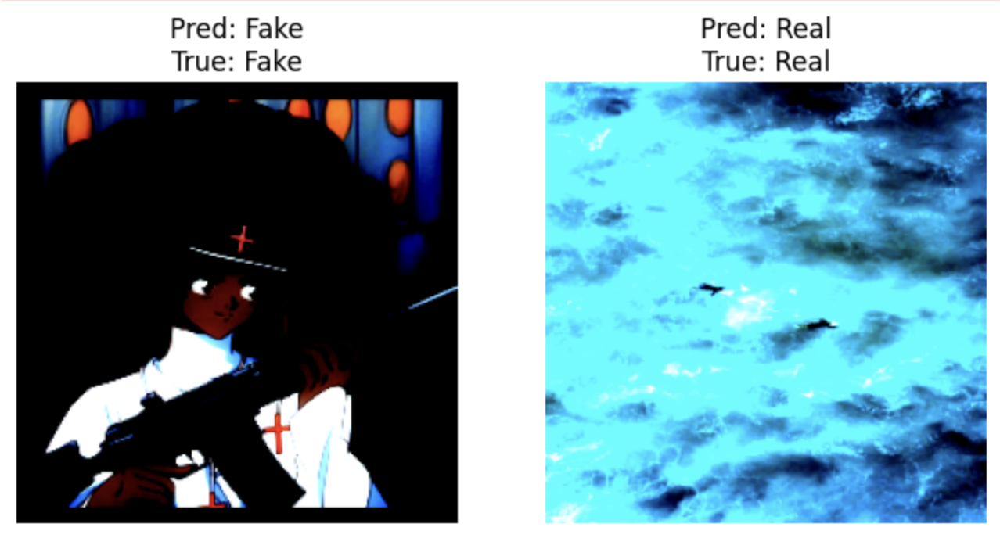
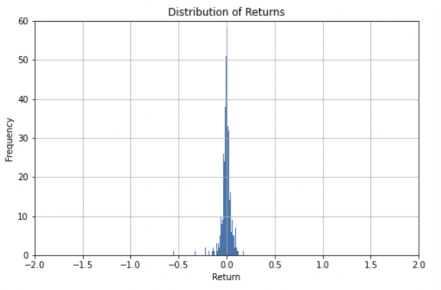
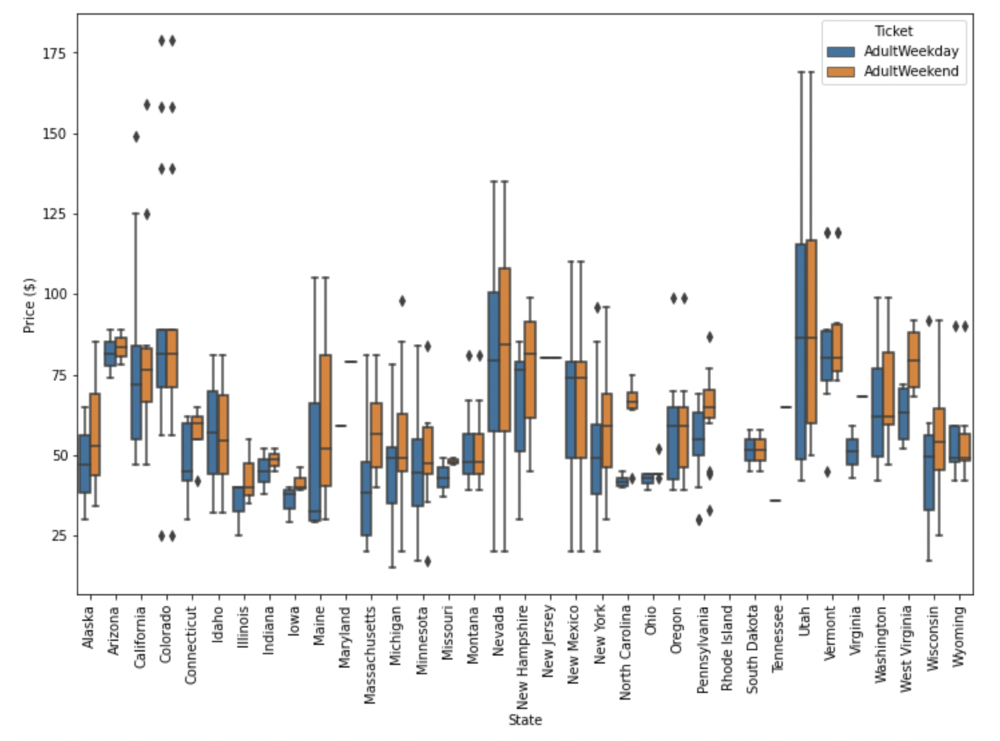
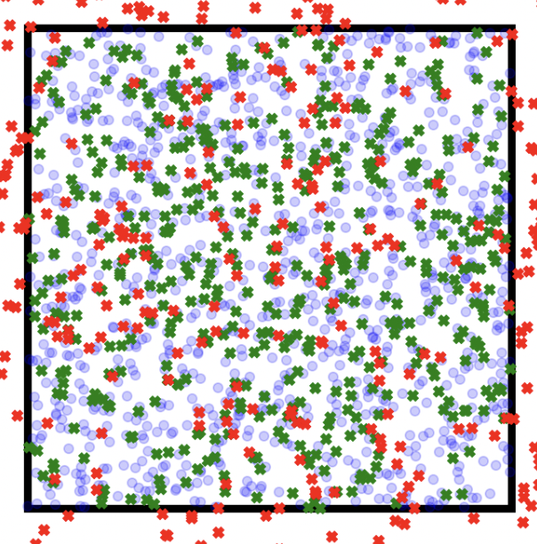
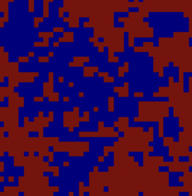

Publications
- Empirical Models of the Hβ Broad Emission Line Gas Density Field, April 2024, ApJ - https://doi.org/10.3847/1538-4357/ad35cb
Data scientist with a background in computational astrophysics research skilled in Python, SQL, and predictive modeling
Get in touchUsing a limited dataset of 5,400 images spanning 90 animal species, I designed and trained a five-layer convolutional neural network from scratch to perform multi-class image classification. The pipeline included standardized resizing, RGB normalization, and regularization techniques to mitigate overfitting in a data-scarce regime. The model achieved approximately 60% test accuracy—over 50× better than random chance (1.1%) and roughly three-quarters the performance of a ResNet-18 pretrained on ImageNet—demonstrating strong feature learning despite the absence of transfer learning. To operationalize the model, I deployed it behind a lightweight Python API, enabling programmatic inference and downstream integration. These results highlight the effectiveness of custom CNN architectures under constrained data conditions and illustrate practical end-to-end ML system design.
Using a dataset of 60,000 images, we used a convolutional neural network to distinguish authentic images from synthetic ones. After preprocessing the data—resizing high-resolution images, normalizing RGB channels, and applying light augmentation—we trained a fine-tuned ResNet-18 model. Despite limited local compute, the model achieved 93.2% accuracy, with balanced precision and recall across both classes. These results show that a modern CNN can reliably detect AI-generated imagery and could serve as one component in a broader content-verification pipeline.

With 11,000 financial news headlines from July to August 2020, we built a model to predict next-day stock price direction based on NLP-derived sentiment and other headline features. After preprocessing—removing outliers, engineering numerical features, and extracting sentiment scores via VADER and FinBERT—we tested Ridge, Random Forest, and XGBoost models. Treating the problem as a classification task and focusing on significant positive or negative returns, the Random Forest model achieved ~70% accuracy, with sentiment scores emerging as the most predictive features. These results demonstrate that NLP-based analysis of news headlines can provide actionable insights into short-term market movements and complement traditional quantitative approaches.

Using data from 330 U.S. ski resorts, we built models to predict adult weekend ticket prices based on key facility features such as lift count, vertical drop, and skiable terrain. After cleaning the dataset, performing EDA, and engineering relevant features, we tested both linear regression and random forest models, ultimately selecting random forest due to its lower errors and more consistent performance. Applying the model to Big Mountain Resort, we found its ticket price is $14.87 below the predicted market rate, suggesting room to increase revenue without reducing visitor volume..

This project simulates the random movement of neutrons in a cube of pure Uranium-235, and calculates the "survival fraction" (fraction of neutrons from one fission event that go on to cause another fission, sustaining the chain reaction) via Monte Carlo (numerical) integration. We found that our model estimates the critical mass of a pure cube of Uranium 235 to be ~110kg. We also explored various model configurations, determining that natural uranium does not spontaneously emit significant neutron radiation, and that shapes closer to spheres have smaller critical masses.

This project applied a logistic regression model to solve the famous "Ising Model" problem from statistical mechanics, in two dimensions. Our model achieves an accuracy of ~ 70%, a result which cannot be improved because logistic regression is a linear model which ignores the two-dimensional lattice configuration.

I'm a Brooklyn-based New Yorker with roots in Portugal, France, and Belgium. I hold a Bachelor's degree from UCLA and a Master's from SUNY Stony Brook. My academic journey has centered on applying computational methods to model complex astrophysical systems and analyze observational data, bridging theory and observation through data-driven insight. Along the way, I developed a strong interest in data science and machine learning—particularly their power to uncover patterns in noisy datasets, automate analysis, and generate predictive models. From fitting physical models to observational signals to applying optimization techniques and statistical learning, I've come to see data science not just as a tool, but as a mindset for extracting meaning from complexity.
My Resume